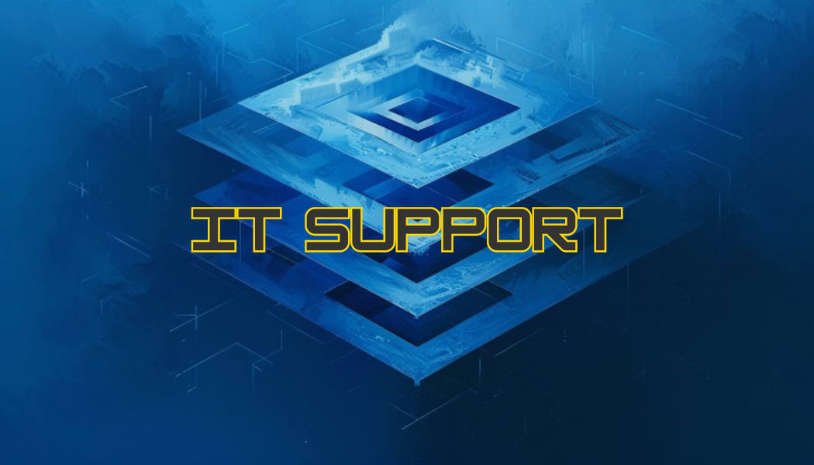

At Virtual Tech Solutions NI, we provide comprehensive IT Support services to ensure your business operates smoothly and efficiently. Our expertise in IT Support covers a wide range of solutions, including:
- Help Desk Support: 24/7 help desk services to resolve technical issues promptly and efficiently.
- Remote and On-site Support: Flexible support options to address IT issues both remotely and on-site.
- Network Setup and Management: Design, implementation, and management of robust network infrastructures.
- Server Administration: Installation, configuration, and maintenance of servers to ensure optimal performance.
- Cybersecurity Solutions: Comprehensive security measures to protect your systems and data from cyber threats.
- Data Backup and Recovery: Reliable data backup solutions and disaster recovery plans to safeguard your business continuity.
- Hardware and Software Installation: Professional installation and configuration of hardware and software components.
- System Monitoring and Maintenance: Proactive monitoring and regular maintenance to prevent potential issues.
- IT Asset Management: Efficient tracking and management of your IT assets to optimize resource utilization.
- Cloud Services: Implementation and management of cloud-based solutions for enhanced scalability and flexibility.
- IT Consulting and Strategy: Expert advice and strategic planning to align your IT infrastructure with your business goals.
- Training and Support: Training sessions and support to ensure your team is proficient in using IT systems and tools.
Partner with Virtual Tech Solutions NI for reliable and efficient IT Support services that keep your business running smoothly.